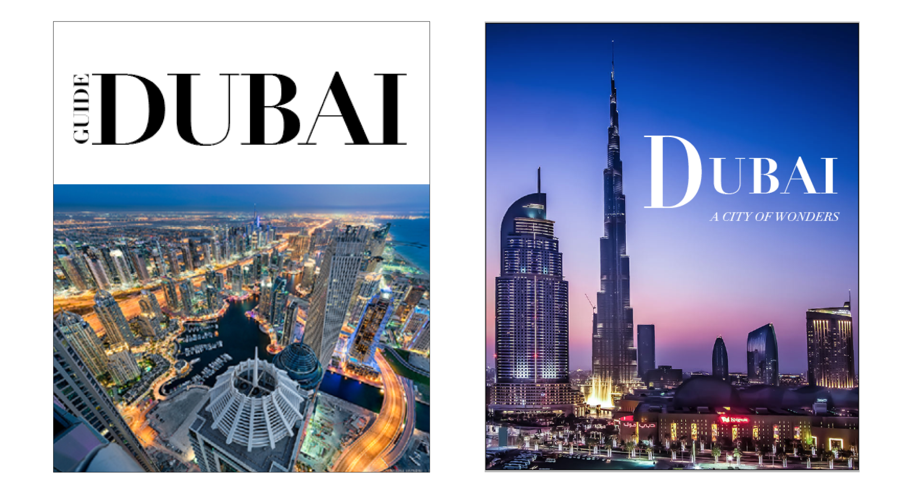
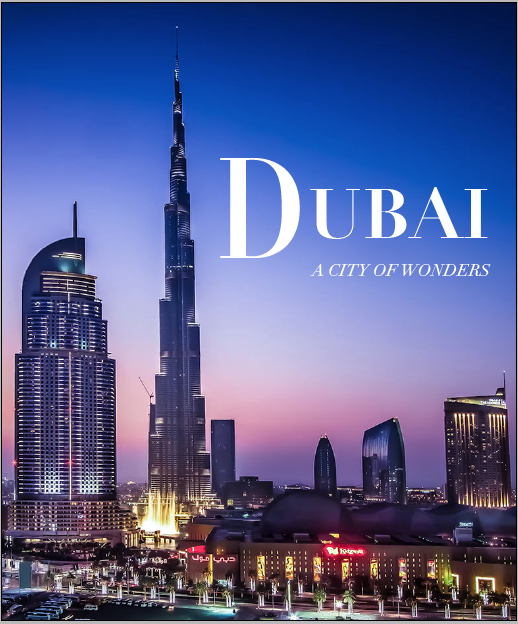
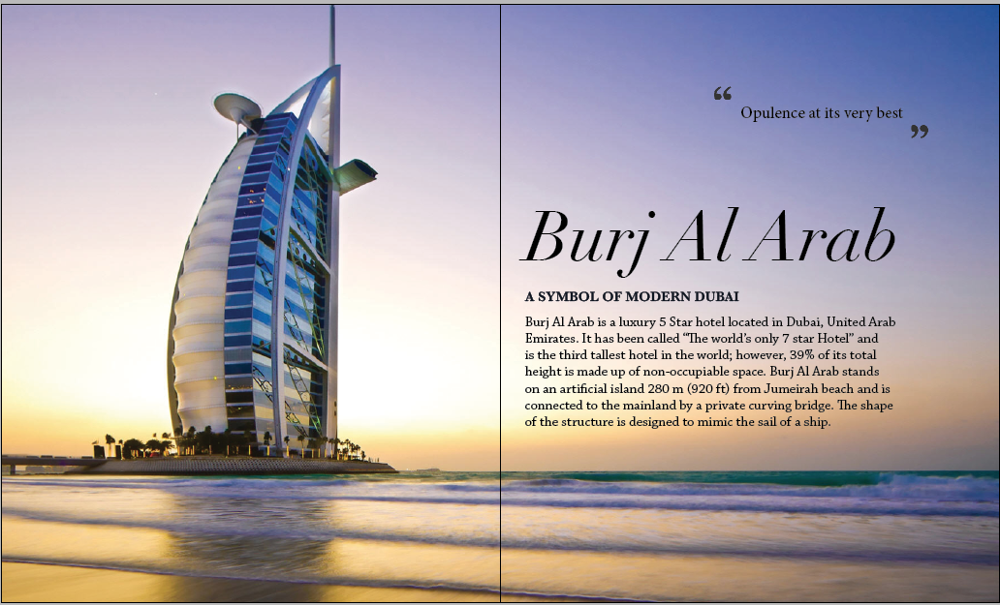
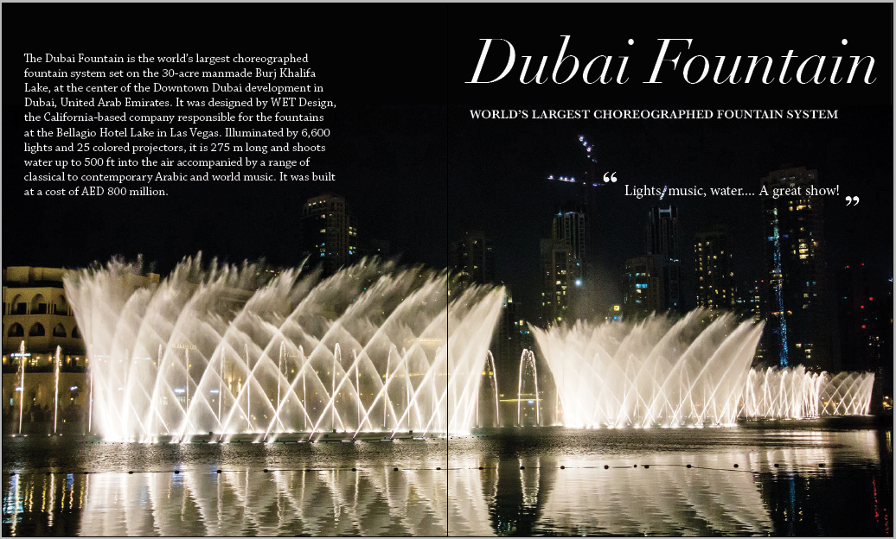
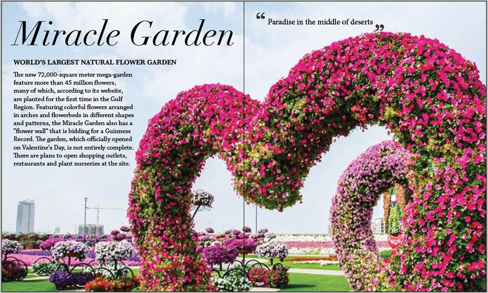
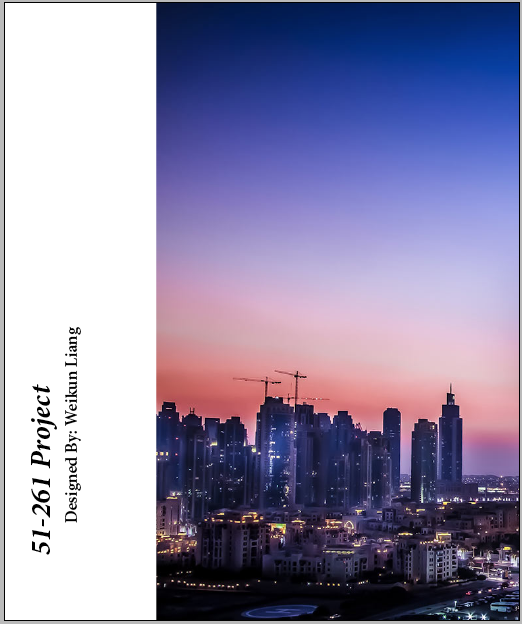

Project Description
In my Communication Design Fundamentals class, one project involved creating a booklet regarding a content of our choice.
My idea for my booklet was to create a guide for the city I grew up in - Dubai. I felt that images plays a big part in my project since the visuals are what will be the most appealing to tourists. As a result, I decided to use full spread images on all of my spreads.
Design

Initially, I had 2 designs of the cover. The first cover (shown on the left) has the word ‘Guide’ written vertically beside the word ‘Dubai’ to indicate that it is intended to be a guide for Dubai. I used Didot as the font for the cover because I felt it expressed the beauty and fanciness of Dubai.
The second cover (shown on the right) gives more of a nightlife feel of Dubai. The subtitle under it provides a powerful message to the user and is intended to draw the user towards the booklet. I also used Didot for this cover.
In the end, I decided to go ahead with the second cover option because the feeling it gives off is more consistent with the content of the booklet. My final design is show below.




